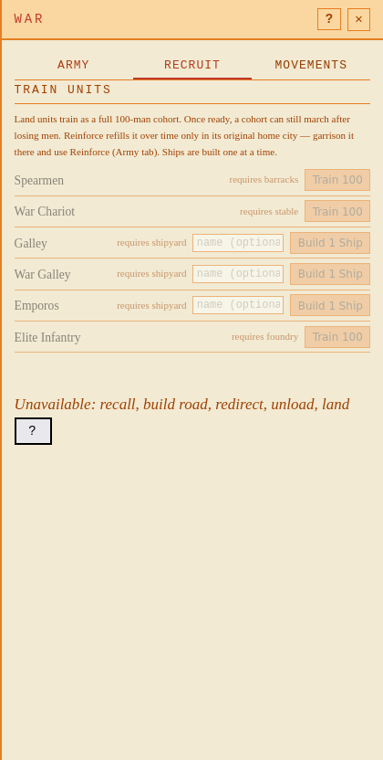
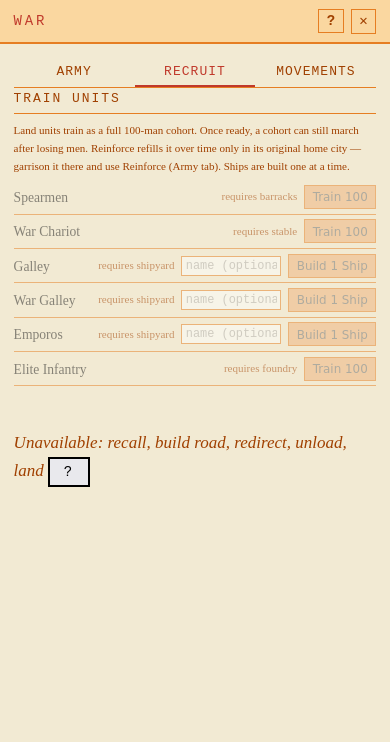

Rättad regeltext. Inga mekanikändringar. Kontrakt och bevis · HTTP-reproduktion · CLI före · CLI efter.
Färdig64 kan marschera; forming40 väntar. Reinforce kräver ursprungsstad. Historiska reinforce-felet kunde inte reproduceras.


Andra färska världen: provenance · mobilbild. TEXT-begriplighet återstår för spelare; bilderna visar nåbarhet och radbrytning.